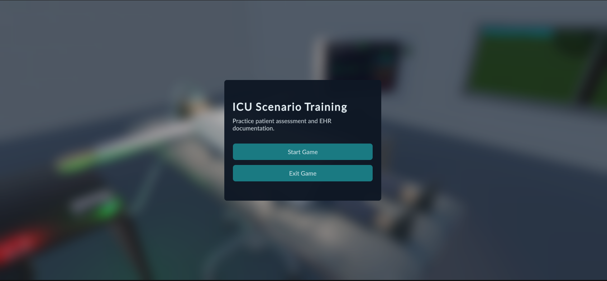
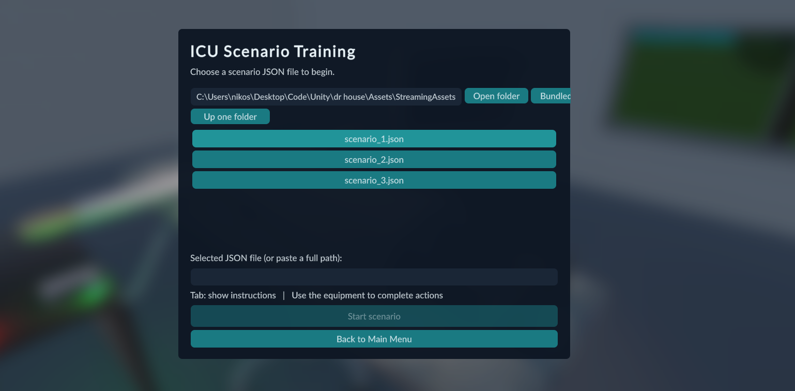
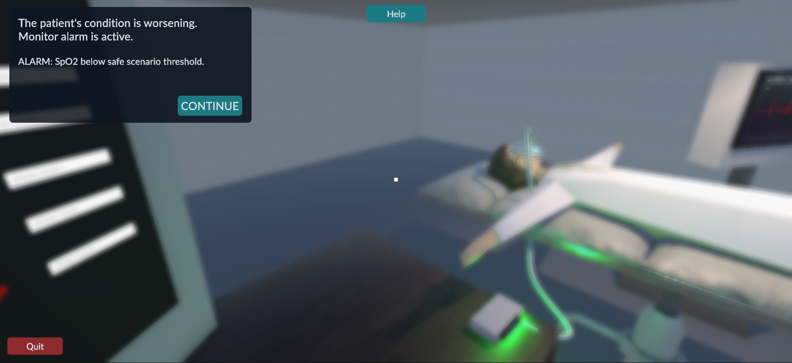
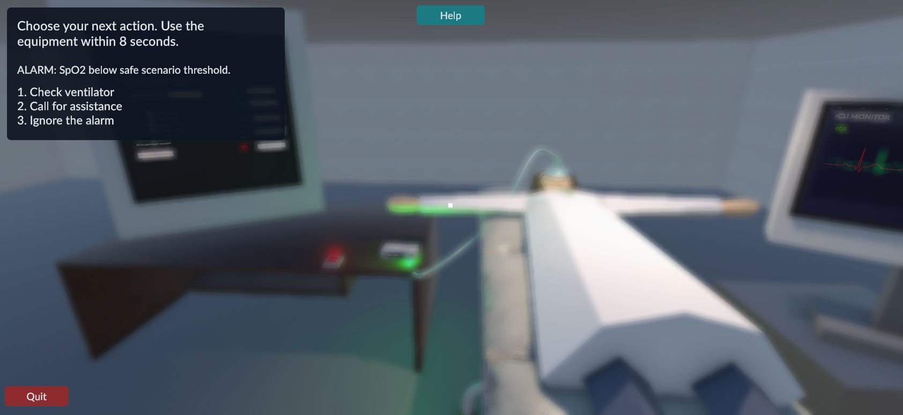
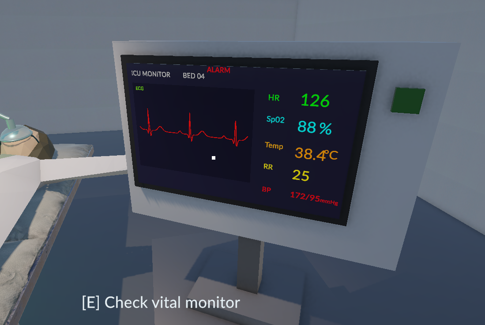
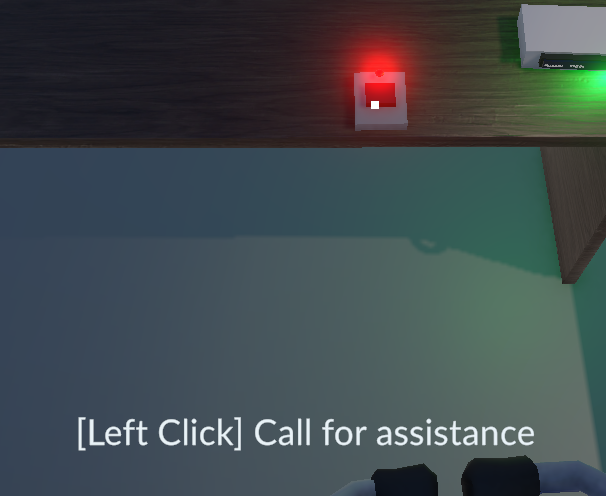
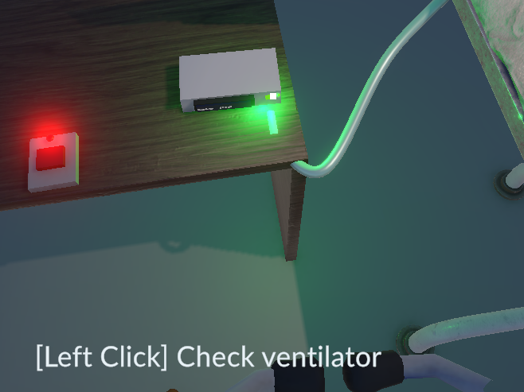
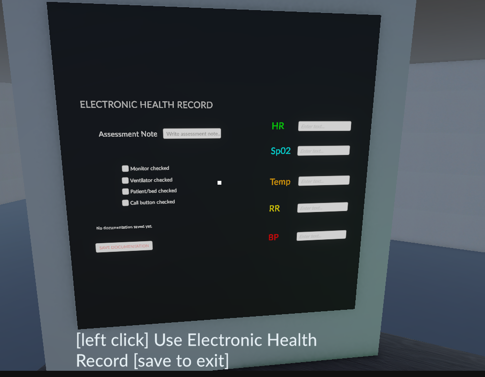
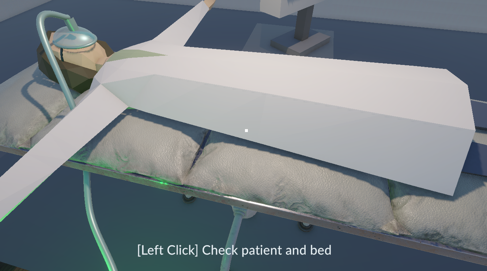
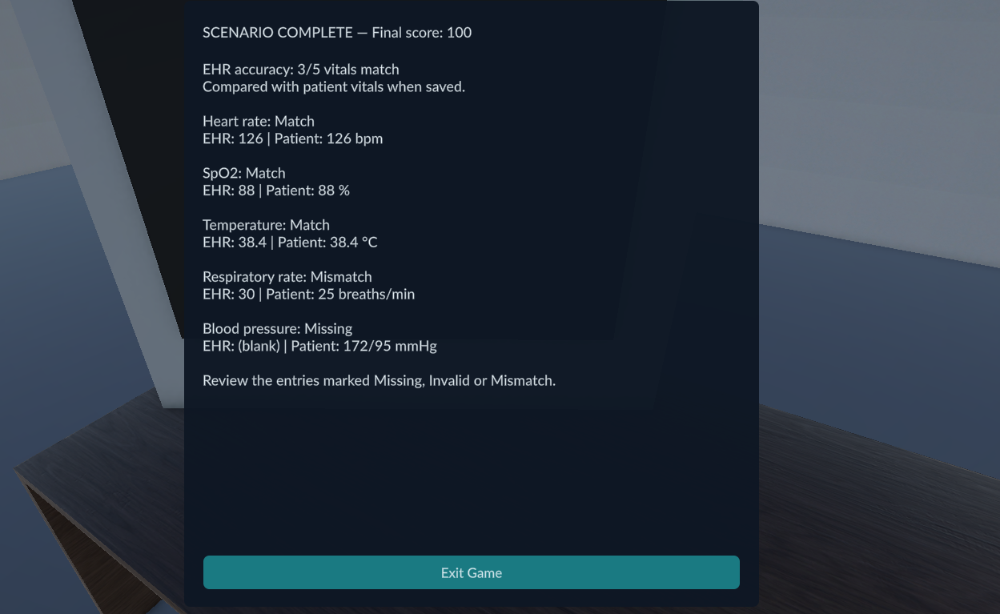

1. Εκκίνηση και επιλογή σεναρίου
Ανοίξτε την εφαρμογή. Αν χρησιμοποιείτε το project στο Unity, ανοίξτε τη σκηνή
Assets/Scenes/SampleScene.unity και πατήστε Play.
1. Στο αρχικό μενού επιλέξτε Start Game.
2. Επιλέξτε ένα αρχείο σεναρίου από τη λίστα.
3. Πατήστε Start scenario για να ξεκινήσετε.
| Αρχείο | Θέμα σεναρίου |
|---|---|
| scenario_1.json | ICU Oxygen Alert - συναγερμός οξυγόνωσης |
| scenario_2.json | ICU Rising Temperature - αύξηση θερμοκρασίας |
| scenario_3.json | ICU Circulation Alert - πτώση αρτηριακής πίεσης |
Το Bundled εμφανίζει τα ενσωματωμένα σενάρια. Για άλλο φάκελο, γράψτε τη διαδρομή και πατήστε Open folder ή χρησιμοποιήστε το Up one folder. Μπορείτε επίσης να επικολλήσετε την πλήρη διαδρομή αρχείου στο πεδίο Selected JSON file.
2. Βασικός χειρισμός
| Πλήκτρο / χειρισμός | Λειτουργία | |
|---|---|---|
| W / A / S / D | Κίνηση εμπρός / αριστερά / πίσω / δεξιά | |
| Κίνηση ποντικιού | Αλλαγή κατεύθυνσης θέασης | |
| Αριστερό Shift + W | Ταχύτερη κίνηση προς τα εμπρός | |
| Space | Άλμα | |
| Tab | Εμφάνιση / απόκρυψη οδηγιών και ελεύθερου δείκτη | |
| E | Έλεγχος μόνιτορ, όταν το κοιτάζετε από κοντά | |
| Αριστερό κλικ | Χρήση διαδραστικών αντικειμένων και κουμπιών |
3. Οδηγίες και αλληλεπιδράσεις
Πατήστε Tab για να διαβάσετε το τρέχον μήνυμα. Όταν εμφανίζεται το CONTINUE, πατήστε το για να προχωρήσετε. Πατήστε ξανά Tab για να επιστρέψετε στη θέαση με το ποντίκι.
Πλησιάστε το αντικείμενο που χρειάζεστε και στοχεύστε το με το σημάδι στο κέντρο της οθόνης. Ακολουθήστε την ένδειξη αλληλεπίδρασης που εμφανίζεται.
| Αντικείμενο | Ενέργεια χρήστη |
|---|---|
| Μόνιτορ ζωτικών ενδείξεων | Κοιτάξτε το μόνιτορ και πατήστε E για να καταγραφεί ο έλεγχος. |
| Αναπνευστήρας | Κάντε αριστερό κλικ στο κουμπί του. Η πράσινη ένδειξη σηματοδοτεί την ενεργοποίηση. |
| Κουμπί κλήσης βοήθειας | Κάντε αριστερό κλικ στο κουμπί κλήσης.Ενεργοποιείται η κόκκινη ένδειξη. |
| Ασθενής / κρεβάτι | Κάντε αριστερό κλικ στο διαδραστικό σημείο του ασθενούς / κρεβατιού για να καταγραφεί ο έλεγχος. |
| Τερματικό EHR | Στοχεύστε το τερματικό στο κέντρο της οθόνης και κάντε αριστερό κλικ. Ο δείκτης ελευθερώνεται για την καταχώριση. |
{kind=link}

{kind=link}

Tab
{kind=link}

{kind=link}

{kind=link}

{kind=link}

{kind=link}

{kind=link}

{kind=link}

{kind=link}

Οι αριθμημένες επιλογές του σεναρίου περιγράφουν τις διαθέσιμες ενέργειες. Η επιλογή καταγράφεται όταν χρησιμοποιήσετε τον αντίστοιχο εξοπλισμό· δεν επιλέγεται με τα αριθμητικά πλήκτρα.
Χρονικό όριο: στα ενσωματωμένα σενάρια, το στάδιο επιλογής ενέργειας δίνει 8 δευτερόλεπτα. Αν παρέλθουν χωρίς την απαιτούμενη ενέργεια, το σενάριο ακολουθεί την πορεία καθυστέρησης. Το Tab δεν διακόπτει τον χρόνο.
4. Καταχώριση στον ηλεκτρονικό φάκελο
Όταν ζητηθεί η τεκμηρίωση, ανοίξτε το EHR και συμπληρώστε και τα πέντε πεδία με τις τρέχουσες ενδείξεις του μόνιτορ:
| Πεδίο | Τι καταχωρίζεται |
|---|---|
| HR | Καρδιακή συχνότητα - αριθμός χωρίς μονάδα |
| SpO2 | Κορεσμός οξυγόνου - αριθμός χωρίς το σύμβολο % |
| Temp | Θερμοκρασία - δεκαδικός αριθμός, με τελεία ή κόμμα |
| RR | Αναπνευστική συχνότητα - αριθμός χωρίς μονάδα |
| BP | Συστολική/διαστολική πίεση, π.χ. 120/80 |
Στο Assessment Note γράψτε σύντομη σημείωση με όσα παρατηρήσατε και τις ενέργειες που εκτελέσατε. Πατήστε SAVE DOCUMENTATION. Για να προχωρήσει το σενάριο, χρειάζονται συμπληρωμένα τα πέντε πεδία, η σημείωση και αποθήκευση.
5. Ολοκλήρωση και αξιολόγηση
Στην τελική οθόνη SCENARIO COMPLETE εμφανίζονται η βαθμολογία (Final score) και η ακρίβεια των καταχωρήσεων (EHR accuracy). Η σύγκριση γίνεται με τις ενδείξεις του ασθενούς τη στιγμή της αποθήκευσης.
| Ένδειξη | Σημασία |
|---|---|
| Match | Η καταχώριση συμφωνεί με το μόνιτορ. |
| Mismatch | Η καταχώριση διαφέρει από την ένδειξη του μόνιτορ. |
| Missing | Το πεδίο έμεινε κενό. |
| Invalid | Η τιμή δεν έχει αποδεκτή αριθμητική μορφή. |
Το EHR accuracy: 5/5 σημαίνει ότι συμφωνούν και οι πέντε καταχωρίσεις. Η επιτυχής αποθήκευση από μόνη της δεν επιβεβαιώνει την ορθότητά τους. Η βαθμολογία ενεργειών εμφανίζεται χωριστά από την ακρίβεια του EHR.Στην τρέχουσα αξιολόγηση των ενσωματωμένων σεναρίων, η ενεργοποίηση αναπνευστήρα και κλήσης βοήθειας δίνει 100 βαθμούς, η εκτέλεση μίας από τις δύο ενέργειες 65 και καμίας 30.
Μελετήστε τo feedback και πατήστε Exit Game για έξοδο. Για νέα προσπάθεια, ανοίξτε ξανά την εφαρμογή ή ξεκινήστε νέο Play στο Unity και επιλέξτε σενάριο.
6. Συνηθισμένες δυσκολίες
| Πρόβλημα | Τι να κάνετε |
|---|---|
| Δεν εμφανίζονται σενάρια. | Πατήστε Bundled ή επιλέξτε τον σωστό φάκελο. Το patientVitals.json δεν είναι αρχείο σεναρίου. |
| Cannot load scenario | Ελέγξτε τη διαδρομή και χρησιμοποιήστε ένα από τα ενσωματωμένα scenario_1/2/3.json. Ένα οποιοδήποτε JSON δεν αρκεί. |
| Δεν ανταποκρίνεται ένα αντικείμενο. | Πλησιάστε περισσότερο και στοχεύστε το σωστό σημείο. Για το μόνιτορ χρησιμοποιήστε E, για τα υπόλοιπα αντικείμενα αριστερό κλικ. |
| Δεν περιστρέφεται η κάμερα. | Κλείστε τις οδηγίες με Tab. Αν βρίσκεστε στο EHR, ολοκληρώστε την καταχώριση και πατήστε SAVE DOCUMENTATION. |
| Το σενάριο δεν προχωρά μετά το EHR. | Ελέγξτε ότι έχουν συμπληρωθεί όλα τα πεδία ζωτικών ενδείξεων και το Assessment Note και αποθηκεύστε ξανά. |
Το κουμπί Help εμφανίζεται με το Tab και ανοίγει τον σύνδεσμο βοήθειας.